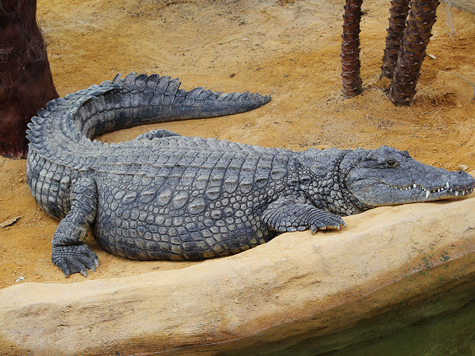
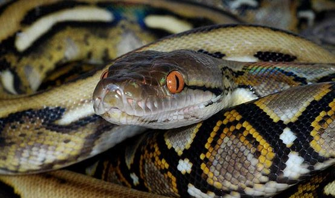

Reptiles

Cocodrilo del Nilo
Nombre Científico: Crocodylus niloticus
Hábitat Natural: Ríos, lagos y humedales de África subsahariana
Dieta: Carnívoro
Curiosidades: El cocodrilo del Nilo es uno de los reptiles más grandes del mundo, con algunos individuos que pueden superar los 6 metros de longitud. Son depredadores oportunistas y pueden cazar una amplia variedad de presas, desde peces hasta mamíferos grandes.

Serpiente Pitón Reticulada
Nombre Científico: Python reticulatus
Hábitat Natural: Selvas tropicales, pastizales y áreas cercanas a cuerpos de agua en el sudeste asiático
Dieta: Carnívoro
Curiosidades: La pitón reticulada es la serpiente más larga del mundo, con algunos individuos que pueden superar los 10 metros de longitud. Son constrictores, lo que significa que matan a sus presas apretándolas hasta que dejan de respirar.

Tortuga de Galápagos
Nombre Científico: Chelonoidis nigra
Hábitat Natural: Islas Galápagos, Ecuador
Dieta: Herbívoro
Curiosidades: Las tortugas de Galápagos son conocidas por su longevidad y capacidad de almacenar alimentos. Algunas pueden vivir más de 150 años. Son una especie endémica de las Islas Galápagos y son consideradas una especie en peligro de extinción.